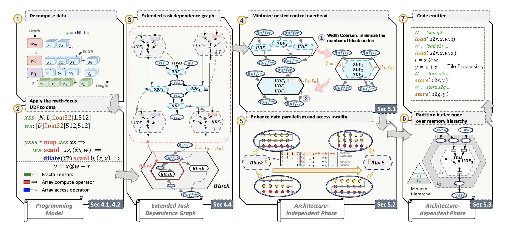

TileFusion
☆ 119Core designer & developer
A C++ template library for GPU tile computation. I helped design the abstractions and implement memory and compute primitives, enabling hardware-aware algorithms such as FlashAttention and FlashDecoding.
ML Systems Engineer, WeLM
Core designer & developer
A C++ template library for GPU tile computation. I helped design the abstractions and implement memory and compute primitives, enabling hardware-aware algorithms such as FlashAttention and FlashDecoding.
July 2026 - Present
Machine Learning System Engineer
June 2025 - June 2026
Machine Learning System Intern
Built long-context inference kernels and integrated them into SGLang; explored GPU communication and distributed attention.
Feb. 2024 - May 2025
Research Intern in System and Network Group
Developed GPU implementations for FractalTensor and co-designed TileFusion, connecting programming abstractions with hardware-aware optimization.
May 2023 - Aug. 2023
Research Intern in Operating System Lab
Developed Rust network drivers and virtualization support for Arceos, and worked on network performance.
SOSP 2024 (*equal contribution)

Dec 23, 2025 · In Chinese
From attention computation to an implementation integrated with SGLang.
Aug 30, 2025 · In Chinese
An implementation-focused introduction to GPU communication with CUDA IPC and RDMA.
Dec 28, 2024 · In Chinese
A closer look at the data movement behind modern GPU matrix multiplication.
A Rust CLI tool for automated CUDA kernel performance diagnostics from NVIDIA Nsight Compute (NCU) CSV exports. It performs roofline analysis, architecture-aware heuristics, and profile diffing to generate actionable optimization suggestions in terminal, JSON, CSV, or Markdown.
An experimental modular OS written in Rust. I integrated hypercraft into arceos, enabling it to be launched as a type-2 hypervisor. Added interrupt support and implemented IO interrupts based on virtio-net and virtio-blk. Implemented ixgbe NIC driver and performed network optimizations.
A VMM (Virtual Machine Monitor) crate written in Rust. Currently integrated into rcore-os/arceos and can be launched as a type-2 hypervisor capable of booting Linux. Developed from the hypocaust-2 project.
Reimplementation of xv6-riscv in Rust language. A Unix-like operating system with optimizations to memory allocation and file system. Serves as the reference implementation for OSCOMP Project.
A hardware-assisted virtualization RISC-V hypervisor using H extensions. Implements SBI call processing, two-stage page table translation, interrupt emulation and forwarding. Can boot & run rCore-Tutorial-v3, rt-thread and mainline Linux.
DemoA high-performance CLI tool written in Rust that acts as a standalone Git Agent. It analyzes staged changes in a git repository and generates professional, context-aware commit messages following the Conventional Commits standard using LLM.
A Rust CLI tool to discover commutable residential communities near your workplace. Uses the Amap (Gaode) API to search for communities and rank them by transit commute time, rating, and popularity.
Sep. 2023 - June 2026
Master of Engineering in Computer Technology
Sep. 2019 - June 2023
Bachelor of Engineering in Computer Science and Technology
OS2ATC 2022, Beijing · March 2023
Presentation on the design and implementation of Hypocaust, a RISC-V type-1 hypervisor written in Rust, showcasing virtualization techniques and system-level Rust programming.
SlidesAway from the keyboard, I run and write. Here are my running log and personal essays.